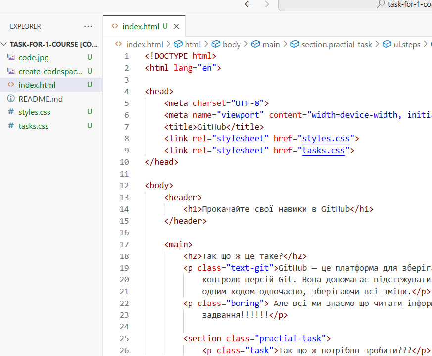
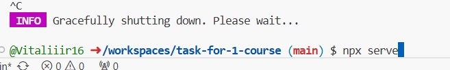
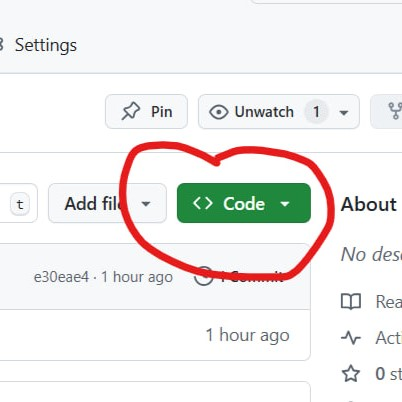
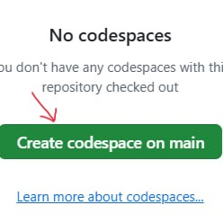

Так що ж це таке?
GitHub — це платформа для зберігання коду та командної роботи, що використовує систему контролю версій Git. Вона допомагає відстежувати зміни в проєкті, дозволяє кільком розробникам працювати над одним кодом одночасно, зберігаючи всі зміни.
Але всі ми знаємо що читати інформацію це скучно, тому пропоную зробити перше практичне задвання!!!!!!
Так що ж потрібно зробити???
- Крок 1: потрібно перейти ось за цим посиланням Тицяй сюди
- Крок 2: тикнути на кнопку Code, дивіться на зображення
- Крок 3: У вас завантажинться онлайн код спейс, потрібно зайти в файл index.html 
- Крок 4: Знайти рядок №47 та додати інформацію про себе. (в коді є пояснення як це зробити)
- Крок 5: Після того як ви додали свої дані, ваш код буде виглядати ось так:
- Крок 6: щоб подивитись на результат треба запустити локальний сервер,в тремінал пишете цю команду:
- npx serve 
- Крок 7: потрібно зберегти нашу зміну в коді, знизу є термінал, в нього вводите ось ці команди
- git add .
- git commit -m "назва коміту"
- git push



приклад нашої праці
- Name Surname, group: number
- Vitalii Savchuk, group: IR-26